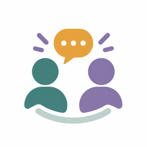

Uusi kohtaamispaikka etäopiskelijoille
Etänä opiskellessa muiden opiskelijoiden kohtaaminen ei aina synny luonnostaan. Uusi EtäKohtaamo tarjoaa CampusConnectissa matalan kynnyksen paikan, jossa etäopiskelijat voivat nähdä muita opiskelijoita ja löytää seuraa yhteiseen tekemiseen.
Löydä seuraa opiskelupäivän keskellä
EtäKohtaamossa opiskelija voi nähdä, mitä muut etänä opiskelevat opiskelijat ovat tekemässä. Mukaan voi liittyä esimerkiksi kahvitauolle, yhteiseen opiskeluun tai muuhun rentoon tekemiseen.

EtäKohtaamossa voit esimerkiksi
- nähdä, mitä muut opiskelijat ovat tekemässä
- löytää seuraa yhteiseen tekemiseen
- liittyä mukaan esimerkiksi kahvitauolle
- jutella muiden opiskelijoiden kanssa
EtäKohtaamoon ei tarvitse tulla suorittamaan mitään. Opiskelija voi osallistua keskusteluun tai olla mukana myös kevyemmin. Tavoitteena on tehdä muiden opiskelijoiden kohtaamisesta mahdollisimman helppoa.
Kohtaamisia ilman suurta kynnystä
Palvelun suunnittelussa lähtökohtana on ollut etäopiskelijan tarve löytää matalan kynnyksen tapa olla yhteydessä muihin.
Etäopiskelijalle yhteyden ottaminen muihin opiskelijoihin voi tuntua vaikealta, jos siihen liittyy paljon vaivaa tai sosiaalista painetta. EtäKohtaamo pyrkii tekemään yhteyden löytämisestä helpompaa tarjoamalla mahdollisuuden nähdä, mitä muut ovat juuri sillä hetkellä tekemässä.
"Kun koen jääväni ulkopuoliseksi, haluan matalan kynnyksen tavan olla muihin yhteydessä."
Yhteiseen tekemiseen voi liittyä omalla tavalla
EtäKohtaamossa käyttäjä voi tutustua tarjolla oleviin toimintoihin ja valita itse, mihin haluaa liittyä.